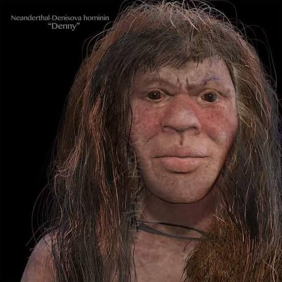

Cruce de especies humanas?
Publicado el

Introducción: Yatusabe qloq
subtema1 la cursiva es dar énfasis
subtema2
- Elemento1
- Elemento1
- Elemento1
una cita relacionada al tema
autor de la cita
Más información en Nombre del sitio
Hola!! acompáñame a conocer más sobre el mundo en que vivimos sin dejar de divertirse
Publicado el

Introducción: Yatusabe qloq
una cita relacionada al tema
autor de la cita
Más información en Nombre del sitio